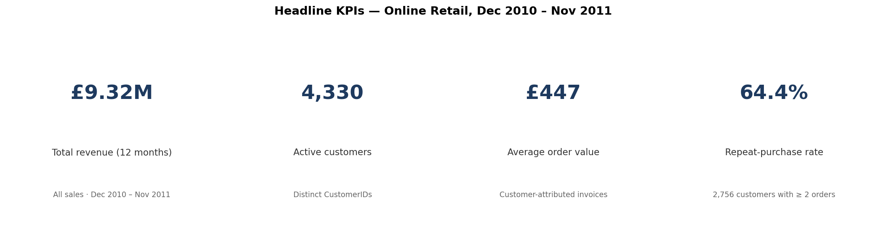
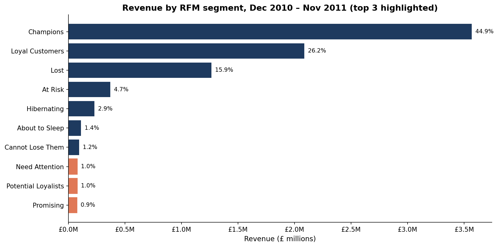
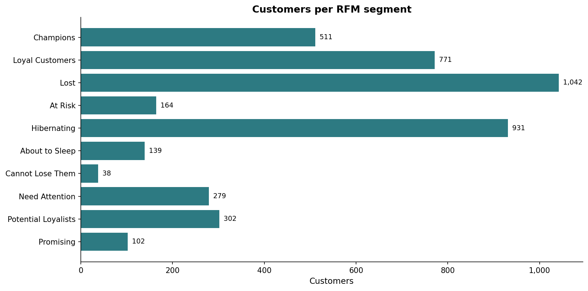
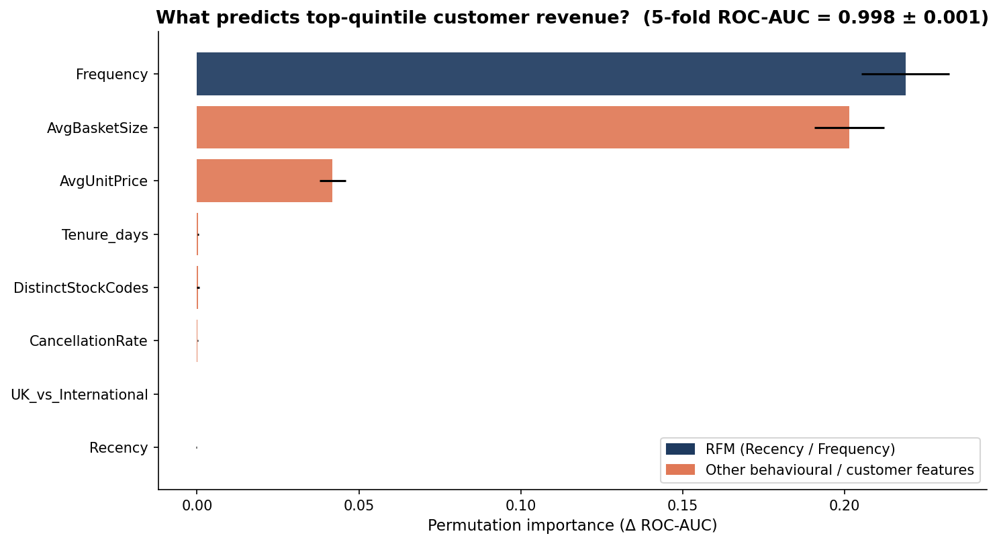
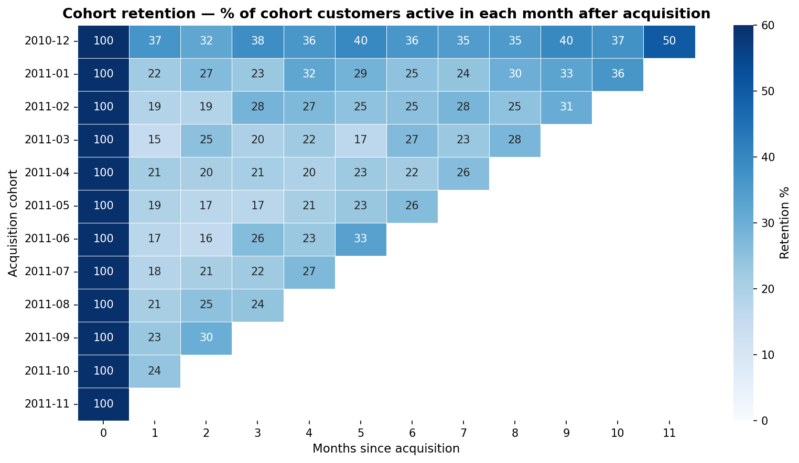
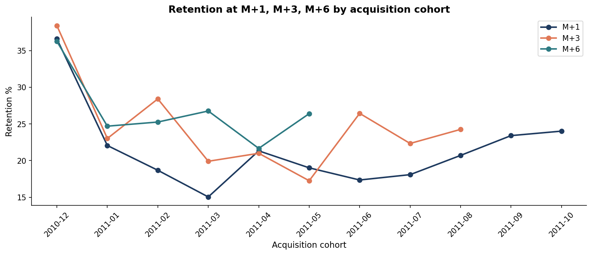
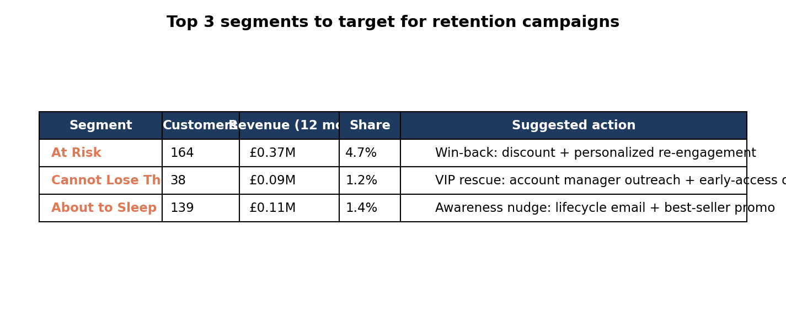

This report reads the UCI Online Retail dataset — ~541,000 transactions from a UK gifts-and-homewares retailer over 12 months — and asks five blunt questions about who is paying the bills, who is leaving, and where the next pound of marketing spend should go.
The headline read is healthy: £9.32M of revenue across 4,330 customers, with two-thirds of customers placing more than one order. The structural read is more interesting: revenue is heavily concentrated in two top segments, and the cohorts acquired after the first three months of 2011 retain at less than half the rate of the original cohort.
The first read on the business is unusually strong on stickiness. The retailer turned over £9.32M across 12 months on 4,330 distinct customers spread across 38 countries — meaningful scale for a single-channel gifts-and-homewares operator.
Order shape and repeat behaviour both signal a B2B-leaning customer base: an AOV of £447 per invoice (well above a typical consumer e-commerce basket) and a 64.4% repeat-purchase rate. Together those numbers say "the customers we already have matter more than new acquisition" — and the next section makes that case quantitatively.

Two-thirds of customers come back. The next question is whether those repeat customers are evenly distributed — or whether a small group is doing most of the work.
Stickiness is fine if the revenue is broadly distributed; concentration is fine if the customer base is healthy. With 11 named segments derived from quintile-binned recency, frequency, and spend scores (the standard Putler grid), the picture is sharply top-heavy.
Champions — just 511 customers, about 12% of the base — contribute 44.9% of revenue. Add Loyal Customers (771 customers) and the top two segments together carry 71% of all revenue from 30% of the base. That is a textbook Pareto and the structural fact that drives every recommendation in this report.


Top six segments by share of revenue — rendered natively for fast comparison:
30% of customers carry 71% of the revenue. Service quality for Champions and Loyal Customers is the load-bearing investment — not a "nice to have."
Knowing that Champions are valuable does not tell us how to make more of them. To get at that, we trained a model to predict whether a customer falls in the top quintile of net spend from their behavioural features alone — recency, frequency, tenure, average basket size, average unit price, distinct product count, geography, and cancellation rate.
Frequency is unsurprisingly the headline driver. The interesting story is what comes next: average basket size is a near-equal second — meaningfully more important than average unit price. The implication for marketing is the cleaner of two routes: bundles and free-shipping thresholds (which grow basket size) beat premium-SKU pushes (which grow unit price) for converting customers into the top tier.

Beyond "they buy more often," the strongest behavioural lever is basket size, not price point. Bundles, multi-pack offers, and free-shipping thresholds are the cleaner play than pushing premium SKUs.
Grouping every customer by the month of their first purchase, then tracking what share of each cohort is still buying in each subsequent month, gives us a clean read on whether acquisition is delivering similar-quality customers across the year. Unobserved cells (e.g. month +11 for the November 2011 cohort) are masked in grey to avoid the false-trend pitfall.
The picture is uncomfortable. The first cohort (December 2010) retains 36.6% of customers at month +1; the worst cohort (March 2011) drops to 15.0%, less than half. No later cohort recovers the December baseline. Topline revenue grew across the year, so the business looks healthy on the headline — but the cohort view shows a chunk of that growth is coming from less sticky customers, which is a warning rather than a victory.


The funnel is filling, but with worse-quality customers. Acquisition quality, not just acquisition volume, deserves to be a tracked KPI — investigate the channel mix change between early and mid 2011.
The retention pool is small but valuable. Three segments — At Risk (high-value customers who have gone quiet), Cannot Lose Them (highest-value customers slipping away), and About to Sleep (early-warning tier) — together hold 341 customers (8% of the base) and £574k of revenue (7.2% of the total). That is manageable for a focused campaign, not a mass-marketing exercise.
The three pools deserve different intensity. Cannot Lose Them is small (38 customers) but extraordinarily concentrated — an average of £2,470 per customer, well above the £1,920 high-value threshold — and warrants 1:1 outreach. At Risk is the volume play: 164 customers and £370k of revenue, the most cost-effective bucket for a discount-led win-back. About to Sleep is the early-warning tier: a lighter-touch lifecycle nudge before they migrate into At Risk.

Three campaigns at three intensities for 341 customers carrying £574k of revenue. The retention play sized correctly is a focused, near-term win — not a mass-marketing programme.
▶ Data Notes & Methodology (click to expand)